This is a UI and brand pass, not a new backend. The volunteer still works against the same day document, with the same lease, merge, snapshot and send behaviour, and the tabulator still cannot approve or publish.
Design direction
One job at a time
The common path is one screen. A forest masthead names the event, the playing day and session and the account. A strip under it answers the volunteer's first question: how many are checked, how many look wrong, how many are still missing, and is the work saved.
Three zones, one column
On a tablet or laptop: add, scan, import and print at the left; the cards in the middle; review and the one send action at the right. On a phone the same parts become one column with two bottom drawers and one action bar.
Progressive disclosure
Search, filters and counts stay pinned. The day and tee fields fold behind a one-line summary on a phone so the score grid is visible before them. Batches, the system check and the field status are open only when asked for.
TeeLine, not a second language
Forest masthead, ivory page, gold for attention and the selected state. The existing reverse mark from public/brand is the only logo. Type is the page's system stack: 20 px title, 17 px player name, 13 px body, tabular figures in the tables.
One primary action per state. Empty: Add cards. Cards waiting: Send N to admin. Save failed: Retry save. On a phone that action is the wide button in the bottom bar; on a laptop it is the filled button in the review zone.
What the friction was, and what changed
| Problem in the old page | Before | After |
|---|---|---|
| The first card was pushed below branding, a bank of add/scan buttons and a tall toolbar | 2,150 px at 390 1,065 px at 1440 | 418 px at 390 236 px at 1440 |
| The page itself scrolled sideways on a phone | 445 px overflow | 0 px at 390 and 360 |
| The control bar took a large share of the phone screen | 279 px | 161 px phone 61 px laptop |
| Add, scan and import competed with the cards for attention | Above the list | Left rail on a laptop, Add drawer on a phone |
| The event, day, session and account were not in one place | Scattered | One forest masthead |
| There was no answer to "how much of today is done?" | Counts only in the toolbar | Checked, issues, missing and save state above the fold |
| A failed save was a line of text that could scroll away | Status line | Persistent banner, Not saved: reason, typed score kept, Retry |
| On a phone, 8 metadata fields came before the score grid | Grid below the fold | One-line details summary, grid first |
What changed in the page
- Masthead. TeeLine reverse mark, "TABULATION · LIVE SHEET", the event, "Day 1 AM", the account and Sign out. A staff account keeps its link back to the desk.
- Today strip. Checked, issues and missing tiles, plus a save tile that says Unsaved, Saving, Saved 14:02, Not saved: reason or Sent to admin. The live line names who saved the shared copy and what arrived from another tabulator.
- Pinned bar. Search (with the
/shortcut), Cards / Scoresheet, day, session, group, filters and counts. Two compact rows on a phone, one row on a laptop. - Left rail. Add card for a player, add players from the system, Take photo, Scan card, Import JSON, Blank card, How this page works, Print, Save as PDF, Export JSON, Refresh list, and the Reset / Replace / Undo group.
- Card. Name, sent badge, checked pill, a details fold for day/session/class/group/tee/Card says/Total, the system line ("Plays off 10, index 9, Blue"), the note, two nine-hole tables in their own scrollers, totals and the card match line.
- Review zone. Send box with the approval boundary stated, Save now, Save and download, New batch, compact All / To check / Checked / Issues chips, and collapsed System check and Review batches.
- Phone. One column, Add and Review drawers with a scrim and Escape, a 48 px action bar, and a details fold that keeps the score grid in the first screen. A loading line while the day's field is read, then a designed empty state.
- States. A failed save keeps the score and shows Retry; 423 says another tabulator is saving and keeps the edits; offline says the edits stay on the device; a name-only card says "Not in the system: tell the admin"; an already-sent card is labelled.
What did not change
- Scoring, WHS calculation, the card HDCP rule and the stored day/session document shape.
- Save, merge, lease, 423 retry, snapshot, Undo and local-versus-shared behaviour.
- The API routes under
src/app/api/scorecards/, SQL and the private bucket. - The tabulator cannot approve or publish. The admin still imports, approves and publishes on
/scores. - Card says remains a note. The WHS playing handicap is the system's and typing in the box never changes it. A blank box no longer counts as an issue; a written value that differs does.
Screenshots
Captured with Playwright against the fixture day, with every API call mocked. No live day document was read, saved, reset or replaced. All ten size/theme shots and the drawer shots reported zero console errors and zero page errors.
390 x 844, light
Masthead, today strip, pinned search, first card with the score grid, and the Send action.
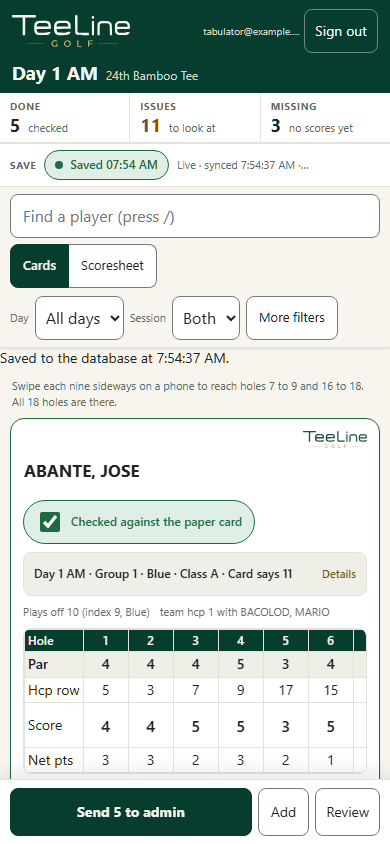
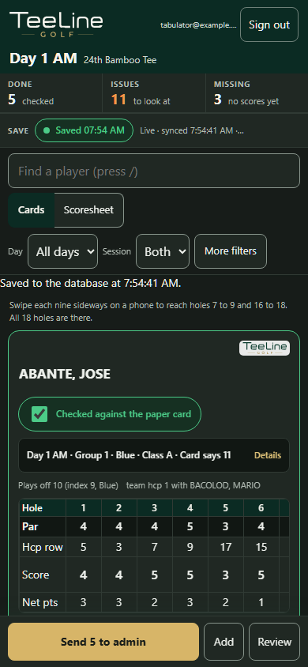
360 x 740, light and dark
The narrowest supported phone. No horizontal page overflow; each nine-hole table scrolls inside the card.
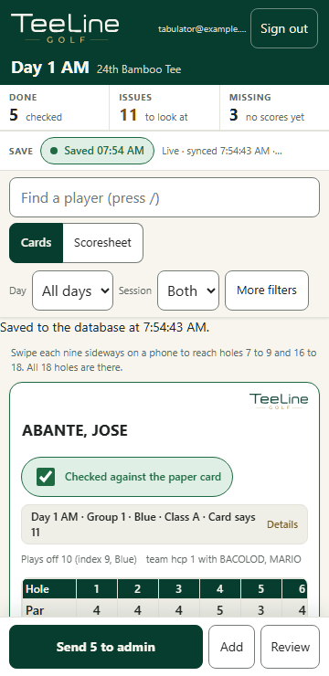
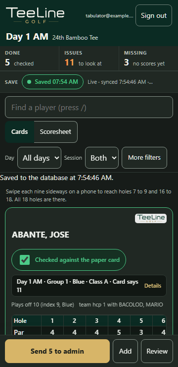
430 x 932, light and dark
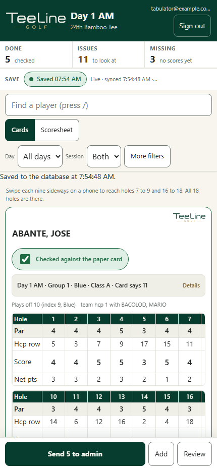
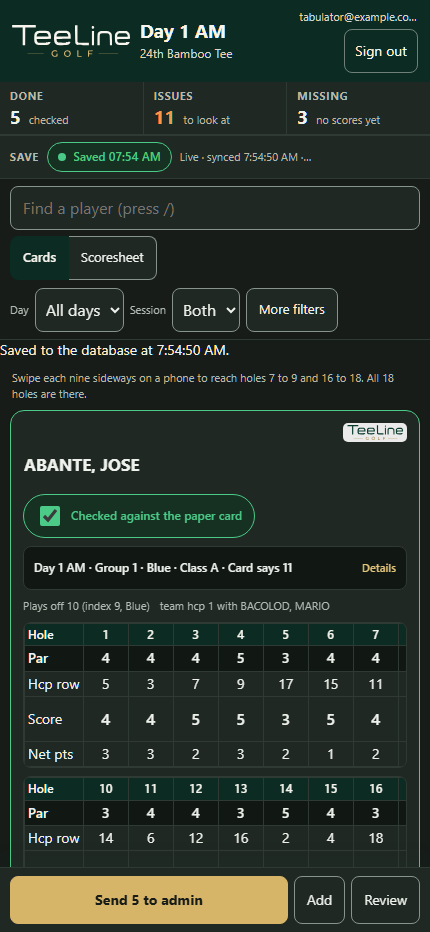
1024 x 768, light and dark
The three zones at the smallest laptop/tablet width. The rail and review are narrower, and the card keeps its own scrollers.
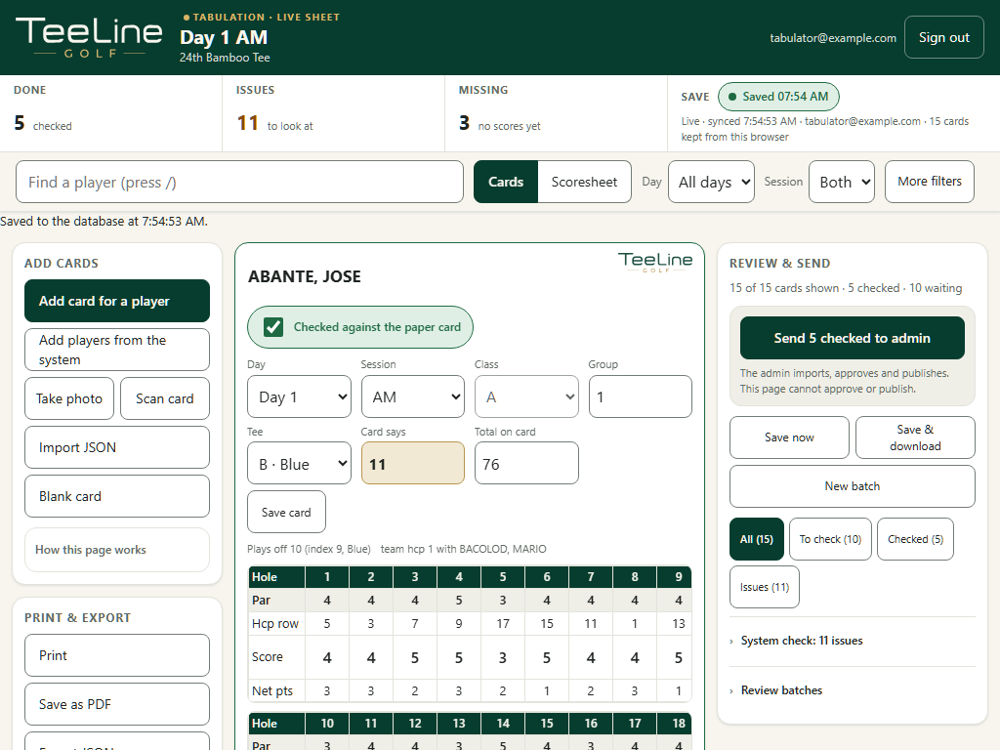
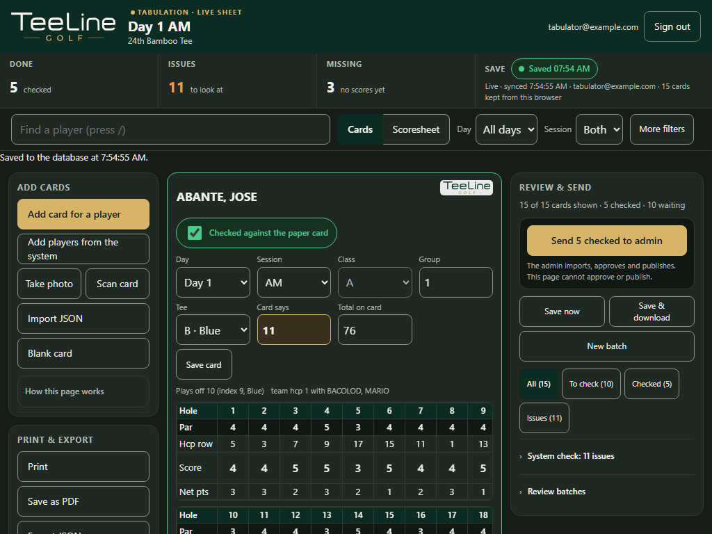
1440 x 900, light and dark
The laptop the desk uses. The add rail, the card and the review/send zone are all on the first screen.
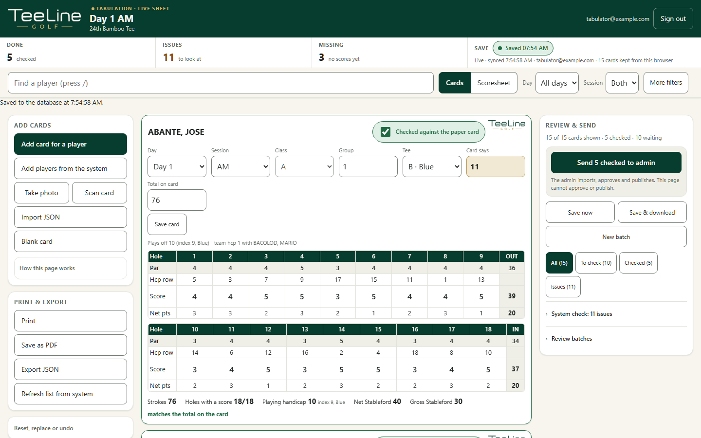
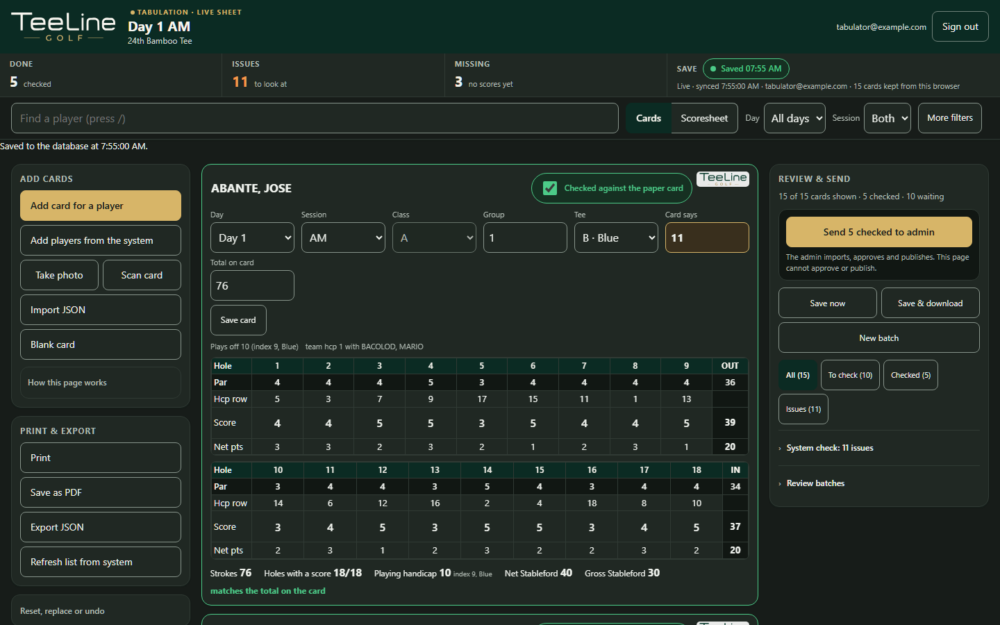
Phone drawers
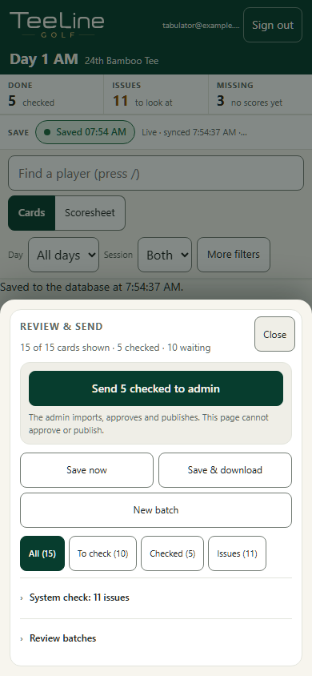
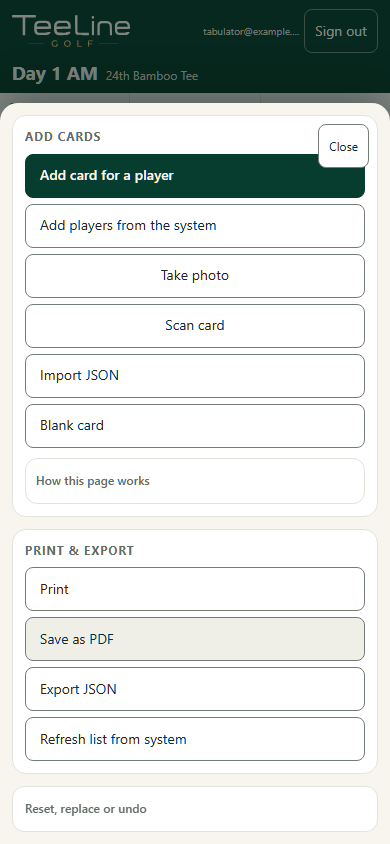
Brand and usability rules
- The tokens at the top of the page remain the single palette. No new hard-coded brand colours were added; the few inline colours that remained were moved onto tokens.
- The TeeLine mark comes from
public/brand. No external font or script is loaded. - Every control is at least 44 px high; the phone primary action is 48 px. Every input uses a 16 px text size.
- No horizontal page overflow at 360 px. A nine-hole table scrolls inside
.tablewrap, and the labels stay pinned. - Light and dark both use the TeeLine token sets, with text at 4.5:1 or better. Focus is a 3 px ring, and the forest header uses a gold ring.
prefers-reduced-motionturns off transitions. Drawers still open and close./focuses the search box. A keyboard-only user can tab to a card, open it, check it, and reach Send. The score tables are focusable scrollers.- The empty, loading, save-failed and offline states are written in plain language. A failed save keeps the typed holes and offers Retry.
- Reset and Replace all keep their confirmation, their snapshot before the change, and Undo.
Files
public/scorecard/index.html: the page, its styles and the UI glue. Persistence, merge and scoring functions are untouched.src/lib/scorecards/page-tabulator.test.ts: 13 page-shape tests updated to the masthead, today strip, zones, details fold, action bar, HDCP note and reduced motion.scripts/verify-ui.mjs: the tabulator section now checks the pinned bar, three zones, first-card position, phone drawers, the details fold, 360 px overflow and the 48 px action.docs/PLAN.md: one row in the built-and-verified table.CHANGELOG.md: one Unreleased entry.docs/tabulator-ui-teeline-2026-11-15.html: this report.docs/screenshots/tabulator-2026-11-15/tabulator-*.png: the ten size/theme shots and the two drawer shots.
Not changed: src/lib/scorecards/store.ts, merge.ts, field.ts, the API routes under src/app/api/scorecards/, any SQL, or the /scores screens.
Verification
| Check | Result |
|---|---|
pnpm check (typecheck, lint, test, build) | pass 2946 tests, build complete |
pnpm check:ui | pass 294 browser checks, 0 failed, 0 console errors |
| Focused page tests | pass 23 tests: 13 page shape, 10 handicap |
| Layout audit at 5 sizes, light and dark | pass 10 captures, 0 page overflow, 0 console/page errors |
| Fixture flow: search, check, send, drawer, failed save and retry | pass send named the player; typed hole kept on failure; retry cleared the banner |
| Tap targets | pass 44 px controls, 48 px phone action |
Not verified
- A real phone, tablet or Safari. The browser checks ran in Chromium at the five widths.
- A real tabulation sign-in and the live API. Every request in the review was mocked; no live day document was touched.
- The card reader and a real camera. Scan and Take photo were not driven with a paper card.
- A screen reader, 200% zoom and Windows high contrast. The markup and focus order were checked, not announced.
- The lease, merge and snapshot paths against the live Supabase bucket. They were not changed, and the existing tests cover them.
Open items for the orchestrator
- Review the branch and merge it into
developwhen the batch is ready. It is not pushed, merged, opened as a PR or deployed. - Check the page once on a real phone at the club, including a failed save over the club Wi-Fi.
- Follow-up outside this task: the admin
/scoresscreens still show their own save and HDCP states, so they do not yet speak the same visual language as the tabulator page. - Follow-up: if the desk wants the same details fold on a tablet, it is one breakpoint change; it was left open on laptop widths because the fields are edited often there.